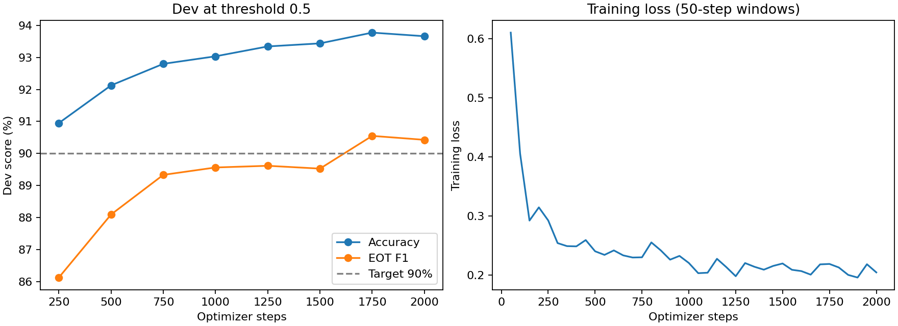

Đã chạy 2,000 bước optimizer, batch hiệu dụng 32, trên pool 315,174 mẫu train nhãn sẵn. Ngưỡng 0.500 được chọn từ dev. Checkpoint tốt nhất: runs/trial_gold_20261024_093324/checkpoints/checkpoint-1750.
Holdout: TARGET_MET. Accuracy 93.81%; F1 EOT 90.62%. Test cũ: accuracy 93.47%, F1 EOT 88.68%; F1 chưa đạt 90% trên bộ này. Test cũ chỉ dùng kiểm tra hồi quy sau khi khóa model/ngưỡng.
| Model / dữ liệu | Số mẫu | Accuracy | F1 EOT | Cắt sớm | Bỏ lỡ EOT |
|---|---|---|---|---|---|
| Model mới / toàn bộ dev | 17,833 | 93.78% | 90.55% | 814 | 296 |
| Model cũ / dev cố định | 2,048 | 55.86% | 53.69% | 804 | 100 |
| Model mới / cùng dev cố định | 2,048 | 93.80% | 90.28% | 93 | 34 |
| Model mới / holdout cuối | 17,099 | 93.81% | 90.62% | 789 | 270 |
| Model cũ / test cũ | 4,183 | 65.03% | 58.94% | 1,290 | 173 |
| Model mới / test cũ | 4,183 | 93.47% | 88.68% | 119 | 154 |
So sánh model cũ và mới mang tính mô tả. Chưa xác minh tập train của model cũ; backbone cũng khác. Toàn bộ dev được dùng chọn model/ngưỡng. Nhãn tham chiếu do dữ liệu cung cấp; grouping nguồn là heuristic, chưa phải kiểm định hội thoại thực do người rà soát.

Export ONNX parity: True. JSON gốc: training_report.json; so sánh cùng mẫu; toàn bộ lỗi dev để rà nhãn.
Dùng để rà dữ liệu và phân tích lỗi. Không tự thay nhãn theo model.
| Loại lỗi | Text | Nhãn tham chiếu | P(EOT) |
|---|---|---|---|
| missed_eot | kể tên một số trường đại học ở từ châu | EOT | 0.0088 |
| missed_eot | nguyễn văn nên từng giữ chức vụ gì trong ban | EOT | 0.0088 |
| missed_eot | diễn biến trận quan độ đặc biệt về chiến thuật và vũ khí | EOT | 0.0090 |
| missed_eot | và dân số năm hai nghìn không trăm lẻ năm | EOT | 0.0091 |
| missed_eot | e rờ ê ên gi ni ảnh hưởng thế nào đến thiết kế của đe viu may ri năm | EOT | 0.0091 |
| missed_eot | và dân số năm hai nghìn không trăm lẻ bốn | EOT | 0.0092 |
| missed_eot | kể tên một số trường đại học ở xan ta bác ba ra | EOT | 0.0100 |
| missed_eot | nó đạt bao nhiêu điểm trên in ki ga do | EOT | 0.0106 |
| missed_eot | tam quốc diễn nghĩa khác với lịch sử thế nào trong việc lưu bị cứu từ châu | EOT | 0.0117 |
| missed_eot | vị trí của ro don trong luân đôn | EOT | 0.0118 |
| missed_eot | ngoài ra văn bản còn đề cập đến những tước hiệu nào liên quan đến vương | EOT | 0.0120 |
| missed_eot | bài hát oăn mô ơ nait nằm trong an bum nào của ma rân năm | EOT | 0.0121 |
| false_eot | cung điện giáo hoàng ở a ví non thuộc phong cách kiến trúc nào và có tầm quan trọng thế nào | NEOT | 0.9868 |
| false_eot | điểm số trung bình của ê lếch trô ních át trên mê ta ri tích năm hai nghìn không trăm lẻ sáu là bao nhiêu | NEOT | 0.9867 |
| missed_eot | xi ni đạt được thành tích gì đáng chú ý tại nhật | EOT | 0.0134 |
| false_eot | phong cách viết lời của bo no trong những năm đầu của u hai như thế nào | NEOT | 0.9866 |
| missed_eot | hi né và những người khác lập luận thế nào về việc xác thực một cuộc tiếp xúc cự ly gần | EOT | 0.0146 |
| false_eot | cung điện giáo hoàng ở a ví non thuộc phong cách kiến trúc nào và có tầm quan trọng thế nào trong lịch sử | NEOT | 0.9851 |
| missed_eot | hoạt động quốc tế của thổ nhĩ kỳ từ năm một nghìn chín trăm năm mươi | EOT | 0.0157 |
| missed_eot | vị trí của huyện bảo thắng trong tỉnh | EOT | 0.0157 |
| missed_eot | mô tô rô la mô bi li ti dùng mô hình kinh doanh gì sau khi tách | EOT | 0.0160 |
| missed_eot | con câi thuộc vùng nào của ý và diện tích của nó | EOT | 0.0163 |
| missed_eot | bao nhiêu người trong số đó lưu trú | EOT | 0.0168 |
| false_eot | người bồ đào nha bắt đầu có mặt ở ma cao từ khi nào và ban đầu họ có quyền gì | NEOT | 0.9820 |
| missed_eot | và dân số của nó năm hai nghìn không trăm lẻ bốn | EOT | 0.0185 |
| false_eot | vị trí của ông ta trong hệ thống phong tước như thế nào | NEOT | 0.9808 |
| missed_eot | dân số clăng năm hai nghìn không trăm mười và thứ hạng ở ma lai xi a | EOT | 0.0198 |
| missed_eot | tên gọi không chính thức của tỉnh hồ bắc và lý do | EOT | 0.0200 |
| missed_eot | cho ví dụ cụ thể | EOT | 0.0202 |
| false_eot | tỷ lệ lãi suất anh thay đổi thế nào trong thứ tư đen và tỷ giá giê bê pê đê em sau đó | NEOT | 0.9797 |
| false_eot | ngoài văn thù viện và đại từ tự còn những ngôi chùa phật giáo nổi tiếng nào khác | NEOT | 0.9795 |
| false_eot | sao thiên vương có thành phần tương tự hành tinh nào và khác biệt với hai hành tinh nào | NEOT | 0.9786 |
| false_eot | từ năm một nghìn chín trăm chín mươi bảy súng trường tiêu chuẩn của lục quân đức là gì | NEOT | 0.9780 |
| missed_eot | kết cục của clê ô pa tra sau cái chết của an to niợt | EOT | 0.0221 |
| false_eot | bản cập nhật man go ra mắt khi nào và có những tính năng gì | NEOT | 0.9778 |
| missed_eot | kết quả của liên đoàn hồi giáo sau bầu cử một nghìn chín trăm bốn mươi sáu | EOT | 0.0231 |
| false_eot | còn các chuyến bay quốc tế đến đó thì sao | NEOT | 0.9768 |
| false_eot | đặc điểm địa hình của tỉnh cikla re li như thế nào | NEOT | 0.9761 |
| missed_eot | phản ứng của sĩ quan pháp sau khi biết tin | EOT | 0.0242 |
| missed_eot | ba cuộc xung đột lớn nào đã chi phối triều đại của các v | EOT | 0.0243 |
| missed_eot | kết quả chung kết u ê ép a cham pi ần líc hai nghìn không trăm hai mươi ba của in tơ | EOT | 0.0243 |
| missed_eot | an bum nào của lin kin pác phát hành ngày ngày hai mươi tư tháng mười năm hai nghìn và nổi tiếng | EOT | 0.0244 |
| missed_eot | tác phẩm kinh điển nào được đề cập trong phim kiều | EOT | 0.0248 |
| missed_eot | đảng nào về nhì | EOT | 0.0259 |
| false_eot | tübin gen nằm ở đâu và dân số khoảng bao nhiêu | NEOT | 0.9739 |
| missed_eot | số phận của ông ta sau khi bị bắt | EOT | 0.0262 |
| false_eot | an bum đầy đủ đầu tiên của nhóm hiện tại ra mắt năm nào và bài hát chủ đề nào | NEOT | 0.9736 |
| missed_eot | còn bao nhiêu danh hiệu cô pa đen rây | EOT | 0.0273 |
| missed_eot | a ri zô na là tiểu bang thứ mấy và cuối cùng gia nhập liên bang hoa kỳ | EOT | 0.0274 |
| false_eot | ngoài việc đó trương tuấn còn có những hoạt động quân sự nào khác | NEOT | 0.9726 |
| false_eot | nghị viện xcót lần tái triệu tập năm nào và đảng dân tộc xcót lần đạt được gì | NEOT | 0.9722 |
| false_eot | hoạt động của anh ấy trong hót xót ra sao | NEOT | 0.9713 |
| false_eot | tübin gen ở đâu và dân số khoảng bao nhiêu | NEOT | 0.9709 |
| false_eot | vùng đông vi xa dẹt còn gồm những tỉnh nào khác | NEOT | 0.9707 |
| false_eot | ác ti vi zhần pắp li ching đệ trình vụ kiện vi phạm bằng sáng chế nào năm hai nghìn không trăm mười ba | NEOT | 0.9704 |
| false_eot | bài hát prô blầm nằm trong an bum nào của a ri a na ren đê và đạt thứ hạng bao nhiêu trên biu bô hót | NEOT | 0.9702 |
| missed_eot | động lực nào khiến ông theo nghề y | EOT | 0.0303 |
| false_eot | hệ vi đê ô 480i thì sao tên gọi đơn giản của nó so với pê a e lờ và ét ê xê a em 576i | NEOT | 0.9696 |
| missed_eot | sau đó lưu bị làm gì để củng cố | EOT | 0.0310 |
| false_eot | trước đây thủ đô nằm ở đâu và tại sao | NEOT | 0.9684 |
| false_eot | hai an bum tay lơ xu íp phát hành giữa đại dịch xê o vê i đê mười chín là gì | NEOT | 0.9684 |
| false_eot | mối quan hệ giữa ông và chun đu hoan như thế nào | NEOT | 0.9683 |
| false_eot | trong giai đoạn một nghìn chín trăm bảy mươi hai đến một nghìn chín trăm bảy mươi lăm mai cơn giắc xơn phát hành những an bum nào | NEOT | 0.9682 |
| false_eot | vờ la đi vô xtốc là thành phố gì và có vai trò như thế nào | NEOT | 0.9670 |
| false_eot | trận đấu có nhiều bàn thắng nhất trong lịch sử hai bun đết li ga là gì | NEOT | 0.9669 |
| false_eot | nó có vai trò gì quan trọng trong lịch sử không | NEOT | 0.9667 |
| missed_eot | đoạn văn còn đề cập đến sông nào | EOT | 0.0337 |
| false_eot | phường thới hòa có đặc điểm địa hình như thế nào về cao độ và diện tích | NEOT | 0.9663 |
| false_eot | nước vệ dời đô khi nào và ở đâu | NEOT | 0.9650 |
| missed_eot | phong cách âm nhạc đơ tro cẹt hướng đến khi thu âm an bum này | EOT | 0.0355 |
| false_eot | dù gây ra sự suy tàn đó uyên cái tô văn được nhớ đến như thế nào trong lịch sử | NEOT | 0.9644 |
| false_eot | bàn thắng gây tranh cãi của ông ấy với anh được gọi là gì | NEOT | 0.9641 |
| false_eot | năm hai nghìn không trăm mười bốn cảng đô thị van cu vơ giữ vị trí nào trong các cảng biển bận rộn nhất bắc mỹ | NEOT | 0.9637 |
| false_eot | nơi đó còn nổi tiếng với điều gì khác | NEOT | 0.9633 |
| false_eot | công viên này được thành lập khi nào và có những công ty nào | NEOT | 0.9627 |
| false_eot | chính sách của tần thủy hoàng về sách vở là gì | NEOT | 0.9625 |
| false_eot | những vị tướng nào của tào ngụy nổi bật sau khi tào phi mất | NEOT | 0.9619 |
| false_eot | bãi cỏ rong ở đâu và sâu bao nhiêu | NEOT | 0.9618 |
| false_eot | tỉnh neuquén ở đâu ác gien ti na và giáp tỉnh nào | NEOT | 0.9615 |
| false_eot | ngoài prô blầm an bum đó còn có những bài hát nào khác được phát hành như đĩa đơn và đạt thứ hạng cao trên biu bô hót | NEOT | 0.9614 |